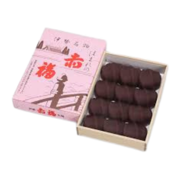
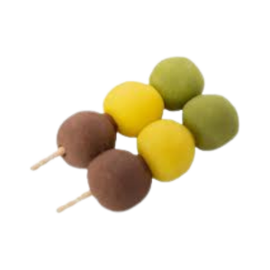
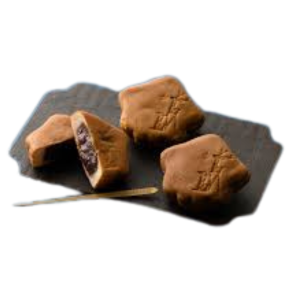

壱位

赤福
三重県 伊勢
餅と小豆餡の絶妙なハーモニー。伊勢神宮参拝の際に欠かせない名物和菓子です。柔らかな食感と上品な甘さが特徴で、老若男女問わず愛される伝統の味わいです。
弐位

坊ちゃん団子
愛媛県 松山
夏目漱石の小説「坊ちゃん」にちなんで名付けられた三色団子。赤・黄・緑の色鮮やかな見た目と、しっとりとした食感が魅力です。
参位

生もみじ饅頭
広島県 宮島
通常のもみじ饅頭とは異なる、しっとりとした生タイプ。もみじの形をした皮で餡を包んだ和菓子で、そのなめらかな口どけが特徴です。